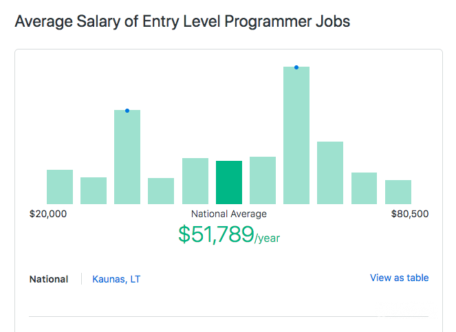
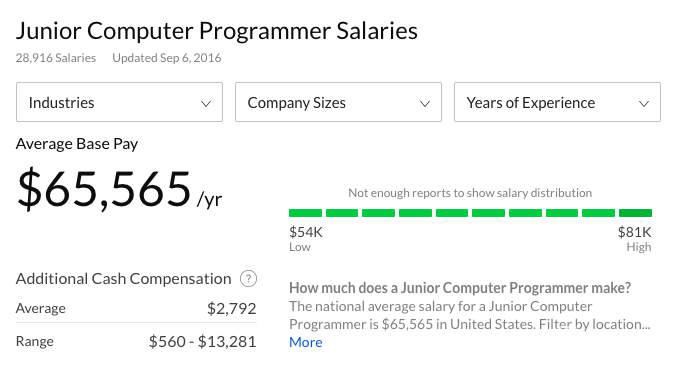
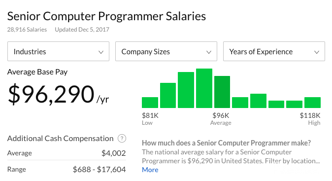

What is the Computer Programmer Salary ?
It is probably safe to say that programming is one of the most sought after professions in today`s world. More and more people choose to study programming, either at a university, after-school activities, online tutorials, or some other way. And that`s not surprising at all - as time goes on, the interest in this specialty is only rising.
With so many people trying to become professional programmers, there is surely more than one incentive to do so. One of the most commonly discussed of such incentives is bound to be the computer programmer salary. we`re going to take a look at just how much do programmers make - starting from the very beginners to the most experienced ones.
Beginner Programmer Salary
Even though entry-level programmers make the least amount of money in the field, their salaries can still be considered more than decent. Just HOW decent, you may ask? Well, according toZipRecruiter , the average computer programmer starting salary turns out to be around $52,000 per year. This equates to be a bit more than $4300 per month

Given this information,it now becomes quite obvious why people say that even the computer programmer starting salary is something that should be strived for. If you keep in mind that the average salary in the US is somewhere around the $3700 per month mark, then programming suddenly does seem like an amazing opportunity to earn more.
Junior Programmer Salary
Junior programmers probably have the most diverse salaries of them all. As noted above, this is mostly because of just how broad this group of programmers is.

According to Glassdoor, the typical average junior computer programmer salary should be somewhere around the $65,500 per year mark. This turns out to be more than $5450 per month. All things considered, this can be seen as a great salary - it`s quite far above the overall average salary of the whole of the USA.
However, since the term "junior" is as broad as it is, this number can fluctuate heavily. Some companies choose to pay more, but also give out more difficult and skill-requiring tasks, while others pay a smaller salary, but compensate the junior computer programmers with various lessons, seminars, and so on.
Senior Programmer Salary
finally, there`s the senior computer programmer`s salary. This is the number that a lot of people give out when they get asked how much do programmers make. This number can also be seen as one of the main motivations for people to get into programming and study it day and night, just to become better at this skill and one day become a senior programmer.

Senior programmers are estimated to make an average programmer salary of around $96,000 per year, or $8000 per month! This comes out to be more than double the average salary of the nation!
This is completely understandable, though. First of all, good and reliable programmers are constantly on-demand, and where there`s a high demand for something, there will always exist a competitive pay. Furthermore, as I`ve already mentioned earlier, senior programmers usually work on a few big tasks at once - this can be considered as a big factor when it comes to a senior computer programmer`s salary.
The Average Salary of a Computer Programmer
Now that we`ve covered the salaries of all three different skill groups of programmers, let`s get an average estimate of just how much do programmers make.
So, beginner programmers make around $52,000, junior coders make around $65,500 and the experts earn a hefty $96,000. This comes out to be $213,500. If we divide the number by 3, we come out with around $71,100 per year or $5,925 per month. So… what does this mean?
Well, first of all, this number is closer to the beginner salary than the senior computer programmer salary (if we`re taking the junior salary as the baseline). This means that speaking very generally, there`s a bigger gap of skill and the number of money companies is willing to pay between the junior and senior programmers than the beginner and junior ones.
However, with that said, it is still pretty clear that an average programmer salary is a point of attraction when it comes to choosing the programme as a career path - it`s significantly bigger than the average salary in the USA.
(ref by :BitDEgree)